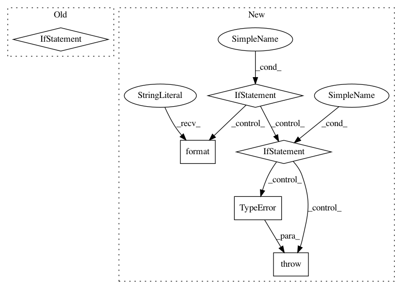

72f3f5bf50ed2d91cdcfbe2cf47120a2df8883cd,nilmtk/results.py,Results,append,#Results#,51
Before Change
tf = TimeFrame(index, series["end"])
intersect = tf.intersect(timeframe)
if not intersect.empty:
raise ValueError("Periods overlap: " + str(tf) +
" " + str(timeframe))
row = pd.DataFrame(index=[timeframe.start],
columns=["end"] + new_results.keys())
row["end"] = timeframe.end
for key, val in new_results.iteritems():
After Change
timeframe : nilmtk.TimeFrame
new_results : dict
if not isinstance(timeframe, TimeFrame):
raise TypeError("`timeframe` must be of type "nilmtk.TimeFrame","
" not "{}" type.".format(type(timeframe)))
if not isinstance(new_results, dict):
raise TypeError("`new_results` must of a dict, not "{}" type."
.format(type(new_results)))
// check that there is no overlap
for index, series in self._data.iterrows():
tf = TimeFrame(index, series["end"])
tf.check_for_overlap(timeframe)
In pattern: SUPERPATTERN
Frequency: 3
Non-data size: 6
Instances
Project Name: nilmtk/nilmtk
Commit Name: 72f3f5bf50ed2d91cdcfbe2cf47120a2df8883cd
Time: 2014-11-26
Author: jack-list@xlk.org.uk
File Name: nilmtk/results.py
Class Name: Results
Method Name: append
Project Name: tensorly/tensorly
Commit Name: 10a6518986bad8bd0eed0f2287922b0d6612e033
Time: 2021-02-25
Author: caglayan.tuna@irisa.fr
File Name: tensorly/decomposition/_nn_cp.py
Class Name:
Method Name: non_negative_parafac_hals
Project Name: kkroening/ffmpeg-python
Commit Name: 57abf6e86edbf1d9ff1448302d4c8bf970092a03
Time: 2018-03-11
Author: karlk@kralnet.us
File Name: ffmpeg/nodes.py
Class Name: Stream
Method Name: __getitem__